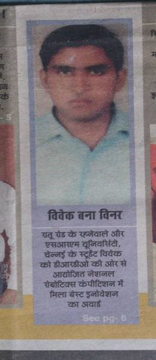

Available for quality engineering leadership
Engineering confidence
into every release.
I'm Vivek Ranjan — a Quality Engineering Leader who architects scalable, AI-enabled test automation for complex enterprise systems. Over 14 years, I've transformed testing from a bottleneck into a strategic engineering advantage across Telecom, Healthcare, and Finance.
- 0
- years in QA
- 0
- tests automated
- 0
- releases delivered
- 0
- engineers mentored

Automation Architect & QE Leader
Architecting scalable test ecosystems & AI-driven quality engineering across Telecom, Healthcare & Fintech.
01 / Career evolution
From functional tester to AI-driven quality leader.
My career isn't a list of job titles — it's a progression of increasingly complex engineering challenges and the systems I built to solve them.
Foundation
Accenture · Pune
Automation Architect
Accenture · Pune
Quality Leader
Accenture → Tech Mahindra
AI-Driven Engineer
Various clients & projects
02 / Engineering stories
It's not about the tools.
It's about the problems I solve.
Telecom billing had 80% manual test coverage
Mediation Zone CDR flows required manual validation across upstream networks and downstream billing — slow, error-prone, and expensive.
Unstable BDD framework with 2,000+ tests
Legacy JBehave framework caused flaky tests and slow execution. Needed migration without disrupting active telecom delivery.
Salesforce CRM testing at enterprise scale
Complex healthcare workflows on Salesforce needed E2E automation across Chrome, Firefox, Edge, and mobile — with Agile sprint delivery.
Flaky test failures draining team productivity
Element locator changes and timing issues caused unreliable test results, eroding confidence in automation suites.
CI/CD pipeline too slow for rapid release cycles
Full regression suite took too long, blocking release confidence. Needed intelligent pipeline optimization.
Manual PDF audit verification consuming team hours
Compliance-critical PDF reports needed manual comparison — tedious, slow, and risk-prone for errors.
03 / Measurable impact
Numbers that tell the story.
0
Years in quality engineering
0
Test cases automated
0
Enterprise releases delivered
0
Engineers led & mentored
0
Pipeline execution reduction
0
Regression cycle reduction
0
Professional awards
0
Industry certifications
04 / How I think
Automation is not scripting.
It's system design.
Most automation frameworks don't fail because of tools — they fail because they're designed like scripts, not systems. My approach treats quality engineering as architecture.
Understand
Deep-dive into business requirements and system architecture
Simplify
Break complexity into testable, automatable components
Architect
Design maintainable frameworks with reusable patterns
Automate
Build robust scripts integrated with CI/CD pipelines
Integrate
Embed quality into every stage of the delivery lifecycle
Measure
Data-driven decisions with clear quality metrics
Improve
Continuous feedback loops and optimization
05 / Technology
Tools I use to solve problems.
Quality Engineering
End-to-end test automation across UI, API, mobile, and integration layers
Programming
Languages and paradigms used to build frameworks and tooling
CI/CD & DevOps
Continuous integration, container orchestration, and pipeline engineering
Cloud & Infrastructure
Cloud platforms and infrastructure management for scalable test execution
Enterprise Platforms
Deep domain experience in CRM, billing, and project management systems
AI & Emerging
AI-assisted development and next-generation test intelligence
06 / AI & the future
Quality engineering is being reinvented.
I'm part of that shift.
What I've built with AI
- Implemented Playwright MCP Integration Architecting resilient E2E test solutions using Playwright with Model Context Protocol for intelligent browser automation.
- Implemented GenAI Framework Modernization Used GenAI to refactor legacy Selenium frameworks into clean, modular, layered architectures — dramatically reducing setup time.
- Implemented Self-Healing Test Frameworks Integrated Healium for automatic locator recovery, reducing flaky failures without manual intervention.
- Implemented AI-Assisted Context Engineering Applied the principle "Reason with AI. Execute with CLI." — optimizing LLM context for efficient, cost-conscious automation.
Where I'm heading
- Exploring Agentic QA Systems Autonomous test agents that can explore, validate, and report — moving from scripted to intelligent testing.
- Exploring AI-Driven Test Generation Leveraging LLMs to generate test cases from requirements, reducing manual test design effort.
- Exploring Predictive Defect Analysis Using failure clustering and pattern recognition to predict defect-prone areas before testing.
- Exploring Autonomous Quality Engineering The convergence of AI agents, self-healing frameworks, and intelligent orchestration into fully autonomous quality systems.
07 / Forward vision
What I can help an organization build next.
Enterprise Automation Platforms
Scalable, resilient test infrastructure that supports elastic execution, self-healing, and cloud-native deployment.
AI-Driven Quality Engineering
Intelligent test generation, smart regression selection, and AI-assisted debugging for faster, smarter testing.
CI/CD Quality Gates
Embedding automated quality checkpoints into delivery pipelines for continuous validation and release confidence.
Test Architecture Modernization
Migrating legacy test assets to modern frameworks — improving stability, speed, and maintainability.
Engineering Productivity
Custom tools and utilities that multiply team output — from test data generation to execution visualization.
Quality Transformation
End-to-end quality strategy that shifts testing left, embeds automation early, and creates measurable business value.
08 / What colleagues say
Leadership is reflected in the people you grow.
"Vivek is an exceptional leader who combines deep technical expertise with strong people management skills. His ability to break down complex problems, provide clear direction, and support his team in executing solutions is truly commendable."
"One of the most dedicated, technically sound, and forward-thinking professionals I've encountered. His expertise spans Salesforce CRM, BRM, Oracle CRM, and modern automation frameworks. He seamlessly integrates AI-driven tools to improve test coverage."
"He has the ability and technical expertise to support the team and resolve their issues quickly. He is proactive, always willing to take ownership, and stays up to date with the latest technologies to drive innovation and continuous improvement."
"His expertise in automation and testing was pivotal to our project's success. His proactive problem-solving ability and leadership were crucial in addressing potential issues swiftly and effectively, keeping our project on track."
"An exceptional leader who consistently demonstrates strong technical expertise, clear decision-making, and a supportive approach to team management. His mentorship and guidance played a significant role in helping the team deliver high-quality results."
"The most smart working professional with nurtured skills for development and a good leader. Be it automation or Innovation he has topped the Accenture charts for many occasions."
09 / Recognition
Certifications, awards, and continuous learning.
Awards & Honours
- 2026ACE Award — Tech MahindraThird ACE Award across career; third recognition in 2025–26
- 2025Best Team Player — Tech MahindraRecognised for cross-team collaboration and mentoring
- 2025Pat on the Back — Tech MahindraRecognised for proactive delivery and ownership
- 2024Standing Ovation — ProfessionalismTech Mahindra award for professional excellence
- 2024Night Owl Award — Tech MahindraDedication beyond regular hours for critical deliveries
- 2023Standing Ovation — Customer FirstTech Mahindra award for customer-centric delivery
- 2022Pat on the Back — Tech MahindraEarly impact recognition after joining TechM
- 2021Celebrate Excellence (ACE) — AccentureFor developing the NVT tool — 70% manual effort reduction
- 2019Celebrate Excellence (ACE) — AccentureHackathon Event Winner
- 2018Apex Award — Delivery & ProfitabilityAccenture recognition for business impact
- 2017Stellar Award & Apex Trailblazer — AccentureInnovation and trail-blazing quality engineering
- 2016Apex Trendsetter — AccentureSetting new benchmarks in automation
- 2012CANSAT Competition — NASA/AASSecond place in international CanSat Competition
- 2010Best Innovation Award — DRDODefence Research innovation recognition
Award Gallery


Certifications
10 / Education & research
Formal grounding, applied leadership.

Executive Programme for Young Managers
Strategic leadership, business analytics, and organisational behaviour — applied to engineering team management and quality transformation.

Bachelor of Technology
Engineering foundations in systems design, signal processing, and embedded systems. Active in ROBOCON, CANSAT, and DRDO research.
Research & Publications





11 / Mutual value
A partnership, not just a position.
What I bring
- 14+ years of enterprise quality engineering depth
- Architecture thinking — frameworks, not scripts
- End-to-end automation expertise across UI, API, and integration
- Proven team leadership and mentoring of 18+ engineers
- AI/GenAI adoption and Playwright MCP implementation
- Problem-solving mindset grounded in engineering principles
What your organization gains
- Faster feedback loops and release confidence
- Reduced regression effort and improved test stability
- Scalable automation that grows with the product
- Engineering productivity through custom tools and workflows
- Future-ready AI-driven quality capabilities
- A culture of continuous improvement and engineering excellence
12 / Let's connect
Let's build
better quality.
For enterprise automation leadership, quality engineering, or AI-driven testing opportunities — I'd be glad to connect.